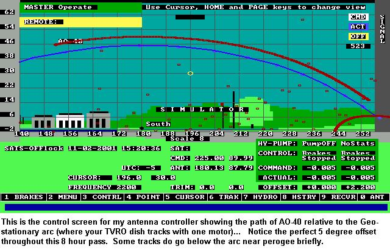
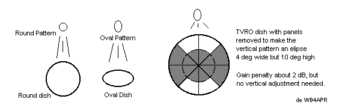
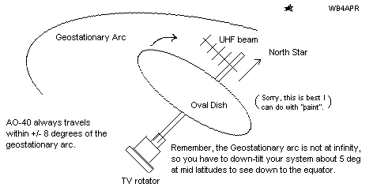
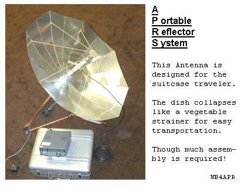
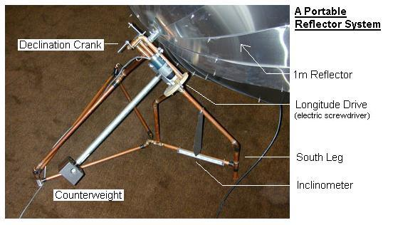
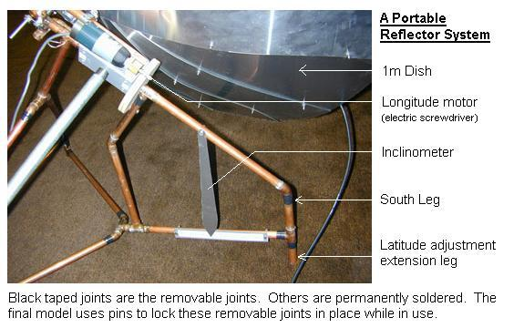
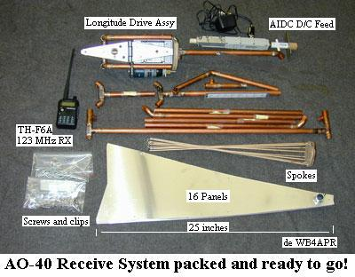

A Portable Reflector System (APRS) for AO-40
This Page has 3 concepts for easy AO-40 antennas:
First:
Using any backyard TVRO dish for AO-40: Because the inclination of AO-40's orbit
is only about 8 degrees, it is always within about 8 degrees of the track across the
sky of all the Geostationary TV satellites. Thus, with a slight offset feed, you
can use any TV dish and existing pointing motor to track AO-40 and receive it
using just about any un-modified 2.4 GHs downconverter. The TVRO dish gives you
10 dB more signal to play with compared to a 1m dish. See these photos of adding
an Sband feed to a 3m TVRO dish:

The above track of AO-40 was during January 2003. By Jan 2004 it will be about 6 degrees below the geostationary arc. During these times, a single adjustment for the offset will last for months. But during times inbetween, the path will cross the arc from below to above or the opposite during each pass. On these days, you may have to re-adjust the offset once after 6 hours or so during a pass. To avoid even this hassle, you can remove some panels from your dish to make the antenna pattern a vertical elipse and then mount the feed at the center of the dish and never have to adjust it for years on end as shown below:

Easy, TV rotator (no elevation) tracking system!
If you have a good downconverter, low noise pre-amp and circular feed and can hear AO-40
on a small eliptical dish (Primstar), all you need to track AO-40 remotely is a simple
TV rotator. Just point the axis of the rotator at the north star, mount the dish and your
UHF uplink beam to the tilted mast, and you can track AO-40 horizon to horizon with
just the $65 TV rotator from Radio Shack. This is because the vertical beamwidth of
an oval Primestar dish is about 20 deg, wide enough to always see AO-40 along the
geostationary arc. Or you can mount a circular dish with a narrower beamwidth, but you need
to make provision to adjust the tilt +/- 8 degrees or so every few weeks depending
on the present offset of the orbit as shown below:

Portable S-Band Antenna for AO-40: This APRS Antenna (sorry, I couldn't resist the name) is designed to be a portable lightweight communications antenna for the traveler who needs ready access to worldwide satellite voice communications via AO-40. After seeing the portable umbrella dish built by G6LVB at the 2001 Amsat Symposium in Atlanta, I had to have one. But his copper cloth was hard to find and probably prone to high maintenance. So I developed my own portable antenna based on the foldable vegitable strainer concept and only parts available from the local Home Depot store.

This antenna is not designed to be a permanent outdoors antenna system suitable for all weather conditions. It uses mixed metals and non weather proof motor positioning controls. Also it is flimsey and will greatly distort in high winds. But beyond these limitations, it is a neat, foldable 1 meter antenna system including a tripod and remote control motor system that can be made to fit in a normal suitcase. (Model shown takes a 24" suitcase, though it can be trimmed to the industry standard of 21")
Caution. It also makes a great solar cooker for boiling water or overheating perfectly good electronics.

The Portable Reflector System is based on the foldable vegetable strainer concept of 16 wedges deployed around a central hub and held in place by a web of radial spokes. An F/D ratio of .3 was chosen for the best match to the readily available AIDC 3033 D/C and other broad dipole feed systems. Using an unmodified AIDC converter (but with the 1/4 wave stub filter removed), the dish provides a measured 11 dB SNR on the middle beacon. Making the filter mods improves this to 14 dB SNR or so.
NEW DESIGN: To try to reduce the number of screws needed to assemble the dish, I have re-worked the pattern for the dish petals to use only 12 petals instead of 16. The photos are all of my 16 pedal prototype. I have NOT built a prototype of the 12 pedal one, so I cannot guarantee the measurements, but they should work. ALso, until someone builds one of these new ones, I cannot say what the spoke lenghts should be. See pattern in links below.
Portable Universal Polar Mount:
Along with the dish, I needed a portable mount and pointing system. This portable mount and remote control system takes advantage of the low inclination of the AO-40 orbit by using a polar mount.

With this mount, not only is almost all tracking movement done with just one motor, but also alignment is trivial. The polar mount has the primary axis of rotation aligned with the earths polar axis (North Star). Thus with the low (6 deg) inclination of AO-40, the antenna is never more than a few degrees or so off of the satellite in the up/down direction. Since this is near the beamwidth of the antenna, you can always find AO-40 by just pointing the south leg South and moving the antenna about the polar axis until you find the beacon. From then on, you can track AO-40 for hours with only occassional bumps of the polar motor. You can also add a very simple dipole to your back-yard 3m TVRO Dish too (Photo1) or (Photo2) .
Alignment only requires pointing the front leg of the mount towards south and then tilting the front or back legs to achieve a tilt angle on the inclinometer that matches your latitude. Notice the inclinometer latitude pointer on the front leg in the photo below. See a zoom view of the Latitude scale which is conveniently calibrated in degrees latitude as well as some representative city names for concvenience.

The APRS Antenna was designed entirely of readily available Home Depot plumbing and electrical fittings and parts. The total cost of these parts is less than $xx. The electric screwdriver used for the drive system added an additional $20 to the overall system. Notice the unterminated copper T fittings on the motor assembly where I was going to add an inclination motor, but it is used so rarely as to not be worth the time or expense when the hand crank (photo) will do once per setup.

Motor Control System: Since the APRS antenna was designed only for portable operation, the remote control seems a little bit of a luxury when your operations will usually be done from the parking lot anyway. But remembering how cold the parking lot at an AMSAT convention in Maine can be, I decided the added cost of the screwdriver was small compared to the creature comforts of working AO-40 from the hotel lobby instead of the freezing termperatures outside. Also the two D'Cells for the screwdriver mounted in the electrical box at the end of the couterwieight arm help with ballast. Since the extra weight is required anyway, it may as well be functional. (My string drive assembly is not the best, so I would receommend any improvements in this area for the serious user). I never really used the drive, since my demo's lasted only a few minutes each, and AO-40 moves so little, it wasnt worth it.
One advantage of the S-Band downconverter at the antenna is that the coax run can be over 100 feet of commmon RG-59 coax cable. This is why it seems very practical to add the remote motor control for convenient operation indoors. To date, I have not focused too much on the uplink since there is nothing unique about transmitting on UHF. But I hope to make a 6 element UHF addition to the feed system so that the dish can be used as a reflector as well.
Other Details:
You are visitor number:
Since 10 Nov 2001.
Return to the APRS HOMEPAGE
{kind=link}
{kind=link}
{kind=link}
{kind=link}
{kind=link}
{kind=link}